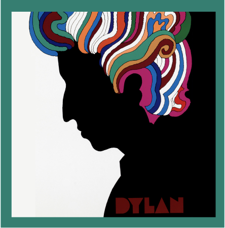
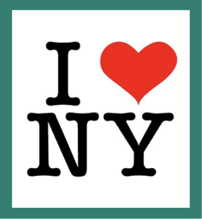
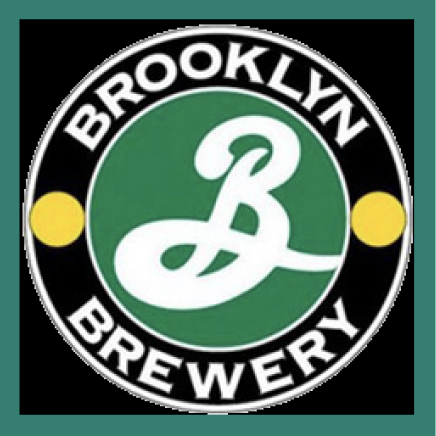
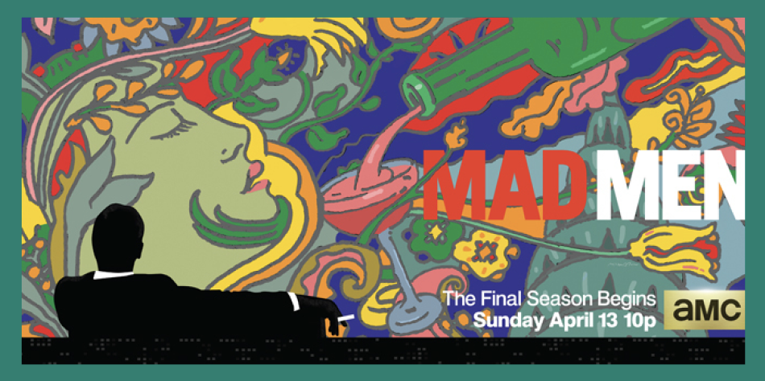

Glaser designed a psychedelic poster of Bob Dylan in 1966, featuring a silhouette of Dylan with vibrant, swirling hair. This poster is considered a classic of the 1960s and a representation of the counterculture movement.

Glaser created the iconic "I Heart NY" logo in 1977, which became one of the most recognizable symbols of New York City and has been widely imitated and parodied.
laser designed the DC Comics logo in 1977 which was used by the comic book company for over three decades. The logo became synonymous with DC Comics during that period.

Glaser created the logo for Brooklyn Brewery in 1987, featuring bold typography and a classic style. The logo has become an integral part of the brewery's brand identity.

Glaser designed the opening title sequence for the television series "Mad Men," which featured a silhouette falling past iconic advertising images. His work on the show's opening received critical acclaim.